Une alimentation adaptée à vos besoins !
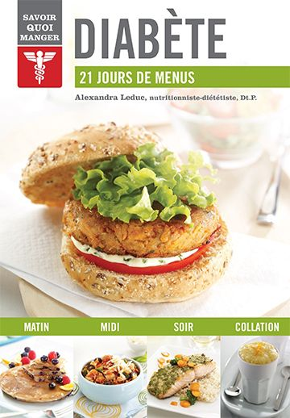
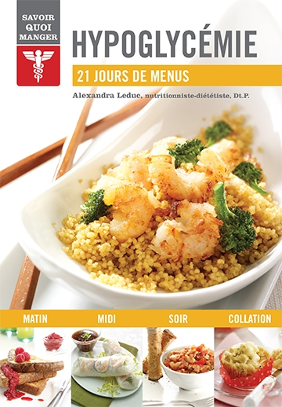
 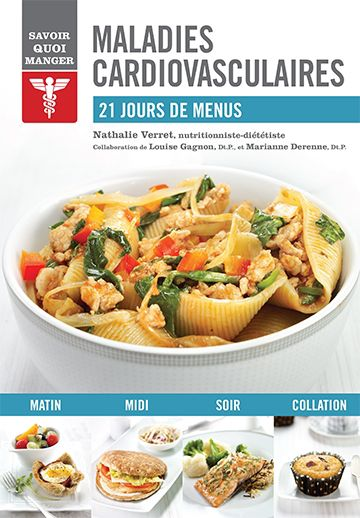
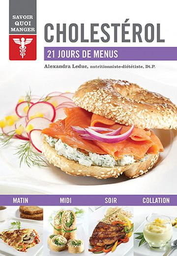
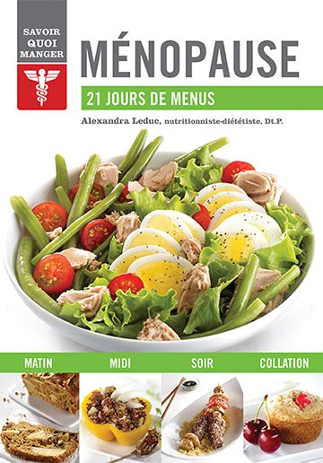
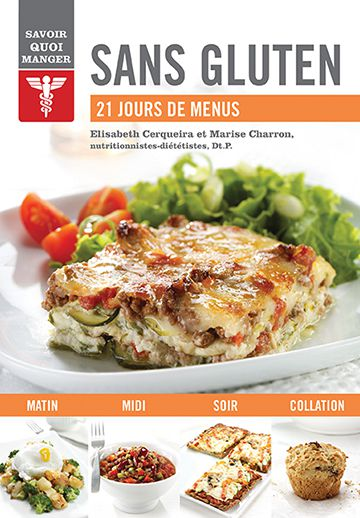
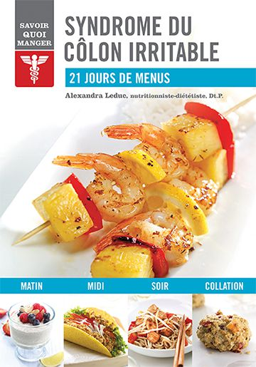
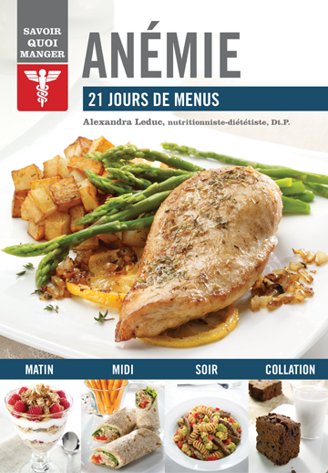
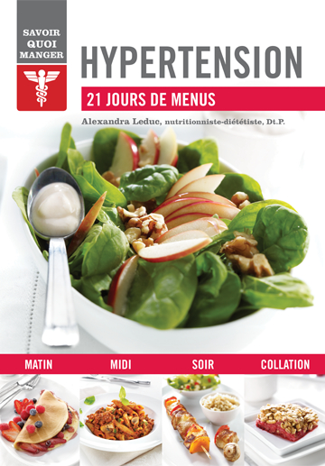
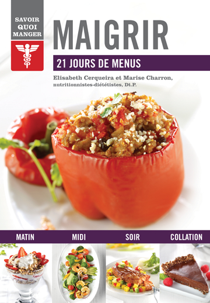
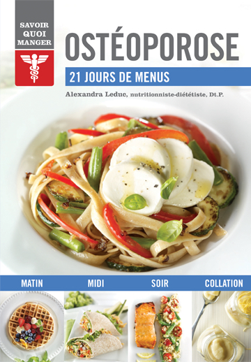
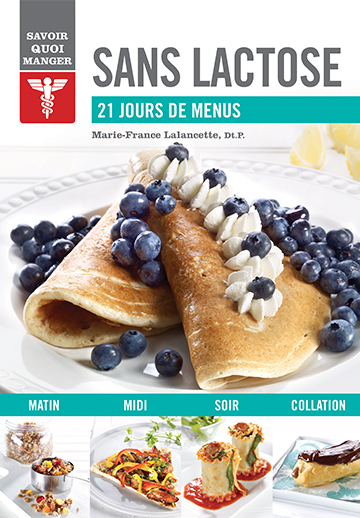
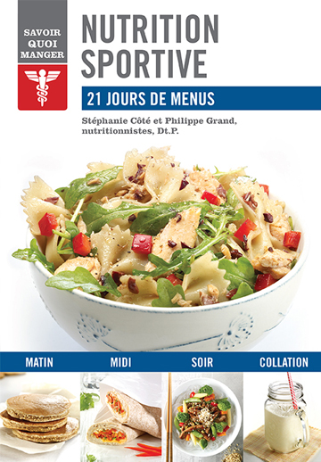
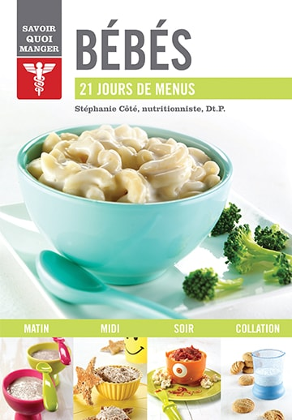
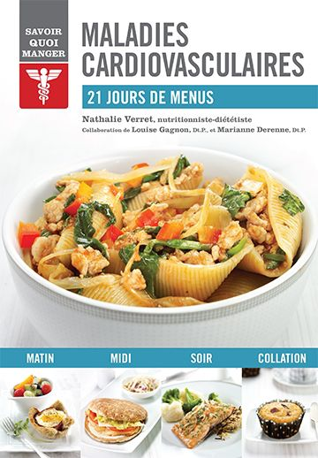
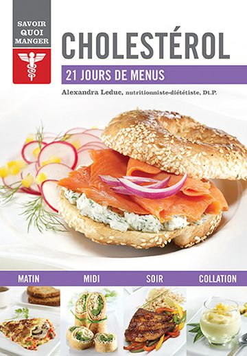
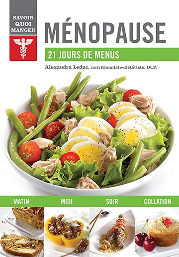
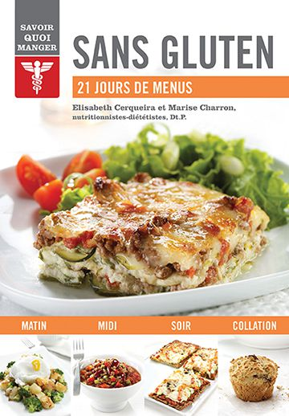
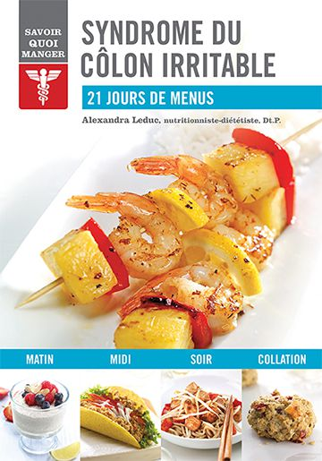
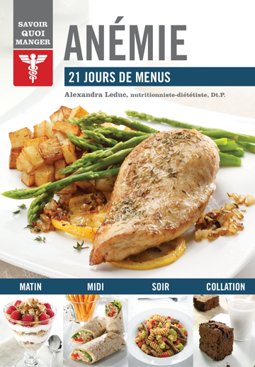
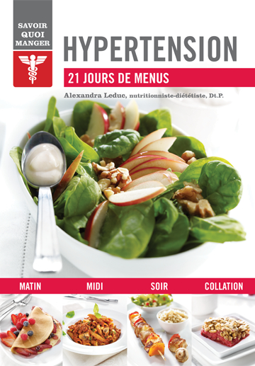
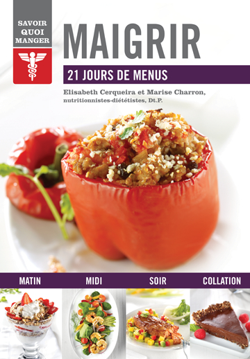
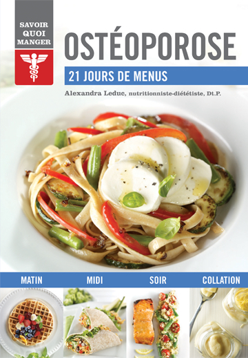
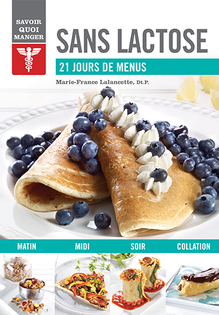
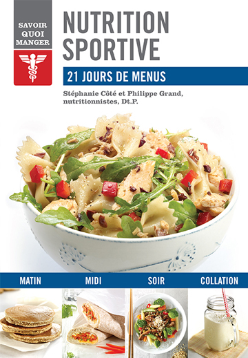
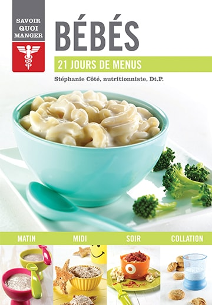
Il est souvent compliqué de trouver l’alimentation adaptée à nos besoins, et ce, que ce soit parce que nous sommes aux prises avec le diabète, l’arthrite ou les maladies cardiovasculaires. Comment s’y retrouver parmi les aliments à adopter ou ceux à éviter et surtout, comment créer son propre plan alimentaire ? Des nutritionnistes québécoises se sont penchées sur la question, soucieuses de répondre aux besoins de plus en plus ciblés de leur clientèle.
Unique en son genre, la collection Savoir quoi manger offre une approche simple et facile à suivre avec :
- des recommandations alimentaires vulgarisées pour permettre de bien comprendre pourquoi certains aliments sont à privilégier et d’autres à éviter;
- quelques restrictions, mais surtout de nombreuses suggestions pour varier à volonté son alimentation;
- des conseils pratiques pour prendre de nouvelles habitudes alimentaires;
- des menus établis pour 21 jours;
- des recettes faciles à réaliser agrémentées d’informations nutritives.
En bref, tout ce qu’il faut savoir pour démystifier son alimentation.
Colorés, épurés, simples et illustrés, les titres de la collection Savoir quoi manger sont de véritables coups de cœur.
Diabète
par Alexandra Leduc, Dt.P.
Pour une personne diabétique, surveiller son alimentation est fondamental. De saines habitudes alimentaires peuvent non seulement atténuer les symptômes, mais aussi prévenir l’apparition de complications liées au diabète.
Ce guide répond spécifiquement à vos besoins en vous permettant :
- de comprendre le diabète et les mécanismes de régulation de la glycémie grâce à l’alimentation;
- de répondre efficacement à vos besoins énergétiques en décryptant les étiquettes nutritionnelles;
- de profiter de recommandations claires pour identifier facilement les bons et les mauvais ingrédients;
- de planifier et de diversifier vos repas et vos collations grâce à des menus quotidiens adaptés à votre état de santé.
Acheter le livre : Diabète
Hypoglycémie
par Alexandra Leduc, Dt.P.
Vous souffrez régulièrement de baisses d’énergie subites, d’étourdissements, accompagnés ou non de sueurs et de tremblements… un état de faiblesse qui disparaît aussitôt après avoir ingéré du sucre? Et pourtant, vous n’êtes pas diabétique! En cas d’hypoglycémie, le seul traitement est l’alimentation.
Ce guide répond spécifiquement à vos besoins en vous permettant :
- de comprendre l’hypoglycémie réactionnelle et d’identifier vos besoins nutritionnels;
- de stabiliser votre glycémie et ainsi prévenir les baisses soudaines d’énergie;
- de bénéficier de recommandations claires pour conserver votre énergie tout au long de la journée;
- de planifier vos repas et de prévoir vos collations grâce à des menus quotidiens adaptés à votre rythme.
Acheter le livre : Hypoglycémie
Arthrite et inflammation
par Marise Charron, Dt.P. et Elizabeth Cerqueira, Dt.P.
Vos articulations sont gonflées et douloureuses? Vous avez du mal à vous lever le matin, à marcher et à monter des escaliers?
Même si aucun régime alimentaire ne peut soigner l’arthrite, une alimentation anti-inflammatoire peut vous aider à réduire vos douleurs articulaires.
Ce guide répond spécifiquement à vos besoins en vous permettant :
- de comprendre les différents types d’arthrite et d’inflammation, et d’évaluer les facteurs de prédisposition;
- de profiter de recommandations claires et précises pour identifier facilement les meilleurs aliments;
- de planifier et de diversifier vos repas et vos collations grâce à des menus quotidiens adaptés à votre état de santé.
Acheter le livre : Arthrite et inflammation
Maladies cardiovasculaires
par Nathalie Verret, Dt.P.
Réduisez les risques de maladies cardiovasculaires grâce à une alimentation équilibrée et une pratique régulière d’activités physiques. Vous pourrez ainsi non seulement réduire votre cholestérol sanguin et améliorer votre tension artérielle, mais aussi maintenir ou diminuer votre tour de taille.
Ce guide répond spécifiquement à vos besoins en vous permettant :
- de comprendre les maladies cardiovasculaires et d’en savoir plus sur les diètes qui ont fait leurs preuves;
- d’améliorer votre bilan lipidique en adoptant de saines habitudes alimentaires;
- de profiter de recommandations claires pour identifier facilement les aliments qui favorisent la santé de votre cœur ainsi que ceux qui y nuisent;
- de planifier et de varier vos repas et vos collations grâce à des menus quotidiens adaptés à votre état de santé.
Acheter le livre : Maladies cardiovasculaires
Cholestérol
par Alexandra Leduc, Dt.P.
Les conséquences d’une hypercholestérolémie peuvent être irréversibles. Adoptez dès aujourd’hui une hygiène de vie saine et une alimentation équilibrée pour améliorer votre bilan lipidique.
Grâce à de bonnes habitudes alimentaires, vous pouvez considérablement améliorer votre bilan lipidique et réduire significativement les risques de maladies cardiovasculaires et d’accident vasculaire cérébral.
Ce guide répond spécifiquement à vos besoins en vous permettant de :
- démythifier les notions de « bon » et de « mauvais » cholestérol et comprendre les complications liées à une hypercholestérolémie;
- faciliter votre digestion et améliorer votre bilan lipidique;
- bénéficier de recommandations claires pour identifier facilement les différentes sources de gras (à favoriser, à éviter et à diminuer);
- planifier vos repas et prévoir des collations grâce à des menus quotidiens adaptés à votre état de santé.
Découvrez des recettes savoureuses, faciles et rapides à préparer : biscuits aux carottes, poulet en croûte d’amandes, sole épicée avec salade tiède aux trois poivrons, quiche méditerranéenne, tofu brouillé au brocoli, croques au thon, yogourt glacé à l’ananas, biscottis santé… et sentez-vous plus léger.
Acheter le livre : Cholestérol
Ménopause
par Alexandra Leduc, Dt.P.
À partir de 40 ans, la chute hormonale s’accentue et certaines femmes commencent à ressentir des symptômes associés à la ménopause : bouffées de chaleur, modification de la silhouette, fatigue, etc.
Préparez votre corps à mieux vivre cette transition hormonale et réduisez non seulement les symptômes, mais aussi les risques de problèmes de santé liés à la ménopause grâce à une alimentation adaptée.
Ce guide répond spécifiquement à vos besoins en vous permettant de :
- comprendre la ménopause et les conséquences des bouleversements hormonaux sur votre organisme;
- soulager vos symptômes tout en réduisant les risques d’ostéoporose et de maladies cardiovasculaires;
- bénéficier de recommandations claires pour identifier facilement les bons et les mauvais ingrédients;
- planifier vos repas et prévoir vos collations grâce à des menus quotidiens adaptés à votre métabolisme.
Découvrez des recettes savoureuses, faciles et rapides à préparer : frappés réveille-matin, quinoa déjeuner, pizza au poulet à la sauce barbecue, saumon glacé au miel, papillote de fruits de mer, salade fraîche aux pois chiches grillés, pouding à l’orange et à la vanille… et préservez votre capital santé.
Acheter le livre : Ménopause
Sans gluten
par Marise Charron, Dt.P. et Elizabeth Cerqueira, Dt.P.
Depuis quelques années, le « sans gluten » est à la mode. On assiste à un engouement sans précédent. Est-ce une mode passagère ? Peut-on réellement être intolérant au gluten ?
Cet ouvrage présente des informations fiables et pertinentes rédigées par des diététistes chevronnées. Il s’adresse à toutes les personnes désirant en connaître davantage sur tout ce qui a trait au gluten : Quels sont les symptômes de la maladie coeliaque ? Qu’est-ce que le gluten ? Où se cache-t-il dans notre alimentation ? Comment éviter les carences alimentaires liées à un régime sans gluten ? Comment cuisiner sans gluten ?
Ce guide répond spécifiquement à vos besoins en vous permettant :
- comprendre la maladie coeliaque (plus connue sous les noms d’intolérance au gluten et d’entéropathie au gluten), la sensibilité non coeliaque au gluten et l’allergie au blé;
- profiter de recommandations simples pour suivre facilement un régime sans gluten équilibré;
- diversifier votre alimentation et cuisiner sans gluten;
- planifier vos repas et collations grâce à des menus quotidiens adaptés à votre état de santé.
Découvrez des recettes savoureuses, faciles et rapides à préparer : gruau de sarrasin avec purée de fruits, soupe aux pois chiches et aux tomates, salade de lentilles aux échalotes, lasagne de courgettes à la florentine, saumon à l’orange et au gingembre, pain nutritif sans gluten, gâteau moelleux aux dattes… et transformez vos contraintes en plaisir.
Acheter le livre : Sans gluten
Syndrome du côlon irritable
par Alexandra Leduc, Dt.P.
Vous vous sentez souvent ballonné, votre transit intestinal est irrégulier, votre activité intestinale est parfois bruyante… et vous ne savez plus quoi manger pour éviter tous ces troubles digestifs ?
Même si aucun régime alimentaire ne peut soigner le syndrome du côlon irritable, une alimentation adaptée peut vous aider à combattre efficacement les symptômes et à réduire vos inconforts.
Ce guide répond spécifiquement à vos besoins en vous permettant de :
- comprendre le syndrome du côlon irritable et savoir comment gérer les crises;
- soulager vos symptômes, leur durée et leur fréquence pour avoir une meilleure qualité de vie;
- profiter de recommandations claires pour identifier facilement les ingrédients qui vous conviennent et ceux que vous tolérez moins bien;
- planifier vos repas et vos collations grâce à des menus quotidiens adaptés à votre sensibilité digestive.
Découvrez des recettes savoureuses, faciles et rapides à préparer : crème d’avoine, muffins aux framboises, porc farci aux olives, poulet aux pommes, casserole végétarienne, cannellonis au fromage et quiche aux poivrons… et retrouvez le plaisir de manger sans appréhension.
Acheter le livre : Syndrome du côlon irritable
Anémie
par Alexandra Leduc, Dt.P.
Vous avez une petite mine? Le teint pâle? Vous vous sentez fatigué, sans énergie, et il vous arrive aussi de souffrir
de maux de tête?
Tous ces symptômes désagréables sont peut-être dus tout simplement à une baisse d’énergie passagère, mais il peut aussi s’agir d’anémie. Celle-ci ne doit pas être prise à la légère. La prévention joue un rôle important chez les sujets à risque, et le problème doit être traité dès qu’il est diagnostiqué.
Ce guide répond spécifiquement à vos besoins en vous permettant de :
- comprendre l’anémie et les différents facteurs déclencheurs;
- combler vos carences en fer ou en vitamines tout en profitant des plaisirs de la table;
- profiter de recommandations claires pour identifier les aliments répondant le mieux à vos besoins;
- planifier et diversifier vos repas et collations grâce à des menus quotidiens spécialement conçus pour prévenir et traiter l’anémie.
Découvrez des recettes savoureuses, faciles et rapides à préparer : strata aux épinards et au bacon, mini quiches au pain, foie de veau aux légumes, sauté de tofu, poivrons farcis au veau haché, bouchées de sole, mousse au chocolat et à l’orange… et retrouvez rapidement votre énergie.
Acheter le livre : Anémie
Hypertension
par Alexandra Leduc, Dt.P.
L’hypertension est l’un des principaux facteurs de risque de maladies cardiovasculaires bien que, dans la plupart des cas, elle ne s’accompagne d’aucun symptôme. Alors, comment peut-on échapper à ce «tueur silencieux»?
La solution est dans votre assiette. L’alimentation figure au premier rang parmi les facteurs qui ont une incidence sur la tension artérielle. Même si cet ouvrage s’adresse d’abord aux hypertendus, il est aussi recommandé à tous pour limiter à terme les risques d’hypertension.
Ce guide répond spécifiquement à vos besoins en vous permettant de :
- comprendre pourquoi l’hypertension est dangereuse pour la santé;
- modifier votre hygiène de vie afin de réduire votre pression artérielle;
- bénéficier de recommandations claires pour adopter dès aujourd’hui un régime alimentaire hypotenseur;
- planifier et diversifier vos repas et collations grâce à des menus quotidiens spécialement conçus pour prévenir et traiter l’hypertension.
Découvrez des recettes savoureuses, faciles et rapides à préparer : frittata au brocoli, pain de saumon, chili végétarien, brochettes de poulet à la moutarde, mini quiches, mijoté de bœuf, bâtonnets de poisson croustillants, délice aux fruits, biscuits à l’orange… et renforcez votre capital santé.
Acheter le livre : Hypertension
Maigrir
par Marise Charron, Dt.P. et Elizabeth Cerqueira, Dt.P.
Maigrir sans suivre un régime draconien, sans aliments interdits, sans danger pour votre santé et surtout sans reprendre les kilos perdus, c’est possible!
Comment ? En modifiant votre mode de vie et en adoptant de saines habitudes alimentaires qui vous permettront de gérer votre poids tout en savourant les plaisirs de la vie.
Ce guide répond spécifiquement à vos besoins en vous permettant de :
- comprendre pourquoi vous avez de la difficulté à maigrir ou à conserver un poids santé;
- prendre conscience que votre poids dépend non seulement de votre alimentation, mais aussi, entre autres, de votre niveau d’activité physique, de votre sommeil et de la gestion de vos émotions;
- profiter de recommandations simples pour adopter facilement une alimentation saine qui vous permettra de combler vos besoins nutritionnels sans ressentir la faim;
- planifier vos repas et prévoir vos collations grâce à des menus quotidiens équilibrés.
Découvrez des recettes savoureuses, simples et rapides à préparer : quésadillas au poulet, chips de choux de Bruxelles, quiche en croûte de quinoa, saumon mariné et salsa de mangue, lasagne de courgettes aux fruits de mer, poulet rôti à la portu- gaise, tarte sablée aux amandes et au chocolat, tiramisu aux dattes… et retrouvez le plaisir de manger sans culpabilité.
Acheter le livre : Maigrir
Ostéoporose
par Alexandra Leduc, Dt.P.
Une alimentation et des habitudes de vie saines peuvent contribuer à préserver la santé des os le plus longtemps possible.
Ce guide répond spécifiquement à vos besoins en vous permettant de :
- comprendre pourquoi vos os se fragilisent;
- modifier votre hygiène de vie pour mieux renforcer votre ossature;
- profiter de recommandations claires pour protéger votre capital osseux en adoptant une alimentation adaptée;
- planifier et diversifier vos repas et collations grâce à des menus quotidiens spécialement conçus pour prévenir les risques de fractures.
Découvrez des recettes savoureuses, faciles et rapides à préparer : oeufs brouillés au fromage suisse, potage aux lentilles et aux tomates, brochettes de poulet à l'érable, cubes de saumon aigre-doux, crème au citron… et renforcez efficacement votre ossature.
Acheter le livre : Ostéoporose
Sans lactose
par Marie-France Lalancette, Dt.P.
La consommation de lait ou de produits laitiers peut engendrer des troubles digestifs, des problèmes respiratoires ou bien des réactions dermatologiques chez certaines personnes.
Ce guide répond spécifiquement à vos besoins en vous permettant de :
- manger sainement en adoptant une alimentation saine, équilibrée et exempte de produits laitiers sans souffrir de carences nutritionnelles;
- disposer de toute l'information nécessaire pour vous aider à modifier votre alimentation et vous guider dans votre apprentissage;
- profiter de conseils pratiques pour vous permettre de rétablir une relation agréable avec la nourriture;
- planifier vos repas et collations grâce à des menus quotidiens spécialement conçus pour éviter les carences nutritionnelles.
Découvrez plus de 50 recettes savoureuses, faciles et rapides à préparer.
Acheter le livre : Sans lactose
Nutrition sportive
par Stéphanie Côté, Dt.P. et Philippe Grand, Dt.P.
Quels que soient vos objectifs et vos motivations sportifs, votre alimentation influence non seulement vos performances, mais aussi le plaisir que vous prenez à vous entraîner.
Ce guide répond spécifiquement à vos besoins en vous permettant de :
- comprendre comment votre organisme utilise les nutriments qui lui servent de carburant;
- combler efficacement vos besoins en fonction des activités que vous pratiquez et de vos horaires d'entraînement;
- bénéficier de recommandations claires pour prendre du plaisir à bouger et à améliorer vos performances;
- bien planifier votre alimentation avant, pendant et après vos entraînements et vos compétitions.
Découvrez près de 50 recettes savoureuses, faciles et rapides à préparer : petit-déjeuner à boire, superbarres au café, boules d'énergie, jujubes, tofu croustillant au brocoli, galettes de betterave, soupe-repas aux légumineuses, omelette dans une tasse, hareng alla puttanesca, pizza au poulet, pouding au chocolat... et mettez vos chaussures de sport.
Acheter le livre : Nutrition sportive
Bébés
par Stéphanie Côté, Dt.P.
Vous vous demandez s’il est temps pour bébé de passer du biberon à la petite cuillère ? Par quels aliments commencer ? Quels sont ceux à éviter, pourquoi et jusqu’à quel âge ? Quelles quantités lui donner pour qu’il soit en bonne santé ? Que faire s’il refuse de manger ?
Les connaissances et les recommandations concernant l’alimentation des bébés ont beaucoup évolué ces dernières années. Entre les conseils lus sur Internet et ceux prodigués par l’entourage bienveillant, il est souvent difficile de s’y retrouver.
Ce guide vous permettra de :
- comprendre les besoins particuliers de votre bébé en matière d’alimentation, et savoir y répondre;
- diversifier son alimentation en toute sécurité;
- bénéficier de recommandations claires pour lui permettre de combler sa faim et de développer ses goûts;
- préparer des purées pour bébés en deux temps, trois mouvements;
- planifier ses repas et ses collations en fonction de son évolution grâce à des menus adaptés à son âge.
Découvrez des recettes pour petits et grands, faciles et rapides à préparer : purée d’ananas, purée de poivrons rouges, purée de poulet, biscuits à l’avoine, scones aux bleuets, boulettes de viande et de pois chiches, mini pains de lentilles, filets de poisson croustillants aux amandes, risotto aux crevettes nordiques, sandwichs de pain perdu au fromage, tofu à l’érable et à la cannelle, pouding à la banane... et inculquez à votre bébé le plaisir de bien manger. Faites de son alimentation son alliée santé !
Acheter le livre : Bébés
Les auteurs
Alexandra Leduc, nutritionniste-diététiste
Diplômée en biochimie et en nutrition de l’Université Laval, Alexandra Leduc est avant tout une nutritionniste passionnée par les saveurs et soucieuse de la santé de la population. En 2010, elle fonde l’entreprise Makéa, qui lui permet d’offrir une gamme de services pour aider la population à manger sainement.
Alexandra transmet également sa passion pour la santé en donnant des conférences, en participant à des chroniques radio et en collaborant à plusieurs revues, journaux et médias Web. Elle aime particulièrement développer des recettes santé et savoureuses, ce qui l’a amenée à sortir, en 2012, le livre Cuisine 5 ingrédients : un ouvrage parfait pour ceux qui désirent cuisiner sainement mais rapidement sans compromettre le goût.
Site Internet : alexandraleduc.com
Marise Charron et Elisabeth Cerqueira, nutritionnistes-diététistes
Marise Charron exerce le métier de diététiste-nutritionniste depuis plus de 20 ans. Conférencière, chroniqueuse à la radio et à la télévision, et auteure de plusieurs livres de recettes, elle est la récipiendaire du Mérite annuel remis par l’Ordre professionnel des diététistes du Québec.
Elisabeth Cerqueira, diététiste-nutritionniste, consultante en clinique, chroniqueuse à la radio et à la télévision, et conférencière pour des congrès de médecins, se tient à la fine pointe des dernières recherches scientifiques. Forte d’une grande expérience dans plusieurs domaines de la nutrition, elle offre des consultations personnalisées depuis plus de 10 ans.
En 2010, Marise et Elisabeth ont cofondé NutriSimple, une organisation qui regroupe plus de 20 cliniques de nutritionnistes au Québec.
Site Internet : nutrisimple.com
Nathalie Verret, nutritionniste-diététiste
Nutritionniste clinicienne en milieu hospitalier, Nathalie Verret compte parmi sa clientèle des personnes qui souffrent principalement d’obésité, de diabète, de problèmes cardiaques, d’hypertension et d’un taux élevé de cholestérol.
Depuis 2003, elle dirige également sa clinique de nutrition. Elle y rencontre des personnes qui présentent d’autres troubles tels que des problèmes gastro-intestinaux, des troubles d’hypoglycémie ou des intolérances alimentaires (au gluten et au lactose notamment). D’autres souhaitent tout simplement bénéficier d’une alimentation saine et équilibrée. Parallèlement à ses consultations personnalisées, elle offre des conférences et des formations en entreprise.
Dans le cadre de la collection Savoir quoi manger, Nathalie Verret collabore avec Marianne Derenne et Louise Gagnon, deux éminentes nutritionnistes spécialisées en maladies cardio-vasculaires.
Site Internet : nathalieverret.com
Marie-France Lalancette, nutritionniste-diététiste
Marie-France Lalancette est diplômée en biologie de l’Université McGill. Elle a obtenu un certificat en sciences de l’éducation à l’UQAM et un baccalauréat en nutrition à l’Université de Montréal. Elle exerce en tant que nutritionniste depuis 1996.
Elle prône une vision globale de la gestion du poids et a publié un ouvrage intitulé Adieu régime, bonjour la vie! aux éditions de l’Homme en 2007. Elle s’est rapidement tournée vers le monde de la pédiatrie et a élargi ses compétences au domaine des allergies alimentaires. Elle bénéficie d’expériences enri- chissantes au CHU Sainte-Justine et en CLSC, service enfance-famille, mais c’est surtout au sein de sa famille – dont trois membres sont allergiques au lait – qu’elle a pu mettre en pratique ses connaissances de la cuisine sans produits laitiers. C’est ainsi qu’elle s’est récemment joint à l’équipe de nutrition- nistes-diététistes travaillant sur la collection Savoir quoi manger des éditions Modus Vivendi.
De plus, Marie-France dirige Nutrition Familia, un cabinet privé situé à Laval. Elle offre un service de consultation en nutrition adaptée à tous les membres de la famille, quels que soient les défis alimentaires et à toutes les étapes importantes de la vie (croissance, grossesse, ménopause, etc.).
Travailler tant auprès des enfants et des adolescents qu’auprès des adultes lui permet d’intervenir dans des problématiques très variées.
Site Internet : cliniquenutritionfamilia.com
Stéphanie Côté et Philippe Grand, nutritionnistes-diététistes
Philippe Grand et Stéphanie Côté forment un sympathique et talentueux duo. Ils sont amis et collègues au sein d’Extenso, le Centre de référence en nutrition de l’Université de Montréal. Puisqu’ils travaillent bien ensemble et que leurs compétences se complètent, il leur fut naturel de s’unir pour produire ce guide nutritionnel.
Philippe est diplômé de l’Institut de tourisme et d’hôtellerie du Québec (ITHQ) et a travaillé pendant plusieurs années en restauration, tandis que Stéphanie possède de l’expérience en journalisme scientifique ainsi qu’une maîtrise en nutrition sportive.
Site Internet : stephaniecote.ca
& extenso.org
Stéphanie Côté, nutritionniste-diététiste
Stéphanie Côté est nutritionniste chez Extenso, le Centre de référence en nutrition de l’Université de Montréal, et pour le site Naître et grandir. Stéphanie est une nutritionniste-communicatrice, car elle n’a jamais pu choisir entre la nutrition et la communication. Ainsi, elle accumule les collaborations à la télévision, à la radio, dans les journaux, dans les magazines et sur le Web. Un des souhaits de Stéphanie, pour ne pas dire une de ses missions, est de transmettre le plaisir de bien manger aux petits comme aux grands.
Site Internet : stephaniecote.ca
, naitreetgrandir.com & nospetitsmangeurs.org